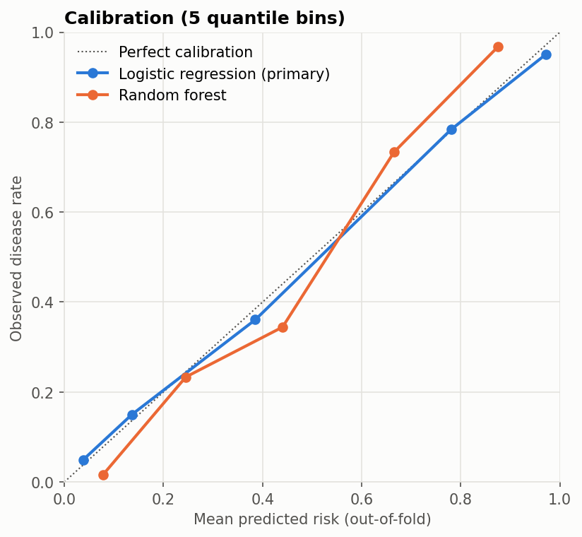

Cardiology · Clinical prediction model
Coronary artery disease risk model (UCI Cleveland)
A calibrated logistic regression reached ROC-AUC 0.907 (95% CI 0.874–0.940) under repeated cross-validation and was at least as good as a random forest. Research and education only; not a clinical decision tool.
- Data
- UCI Heart Disease, Cleveland; n = 303 patients referred for angiography
- Outcome
- Any major vessel more than 50% narrowed
- Method
- Logistic regression vs random forest; stratified 5-fold CV ×20
- Status
- Research only; no external or clinical validation
The question
For patients already referred for angiography, can routinely recorded clinical and exercise-test variables estimate the probability of coronary artery disease, and are those probabilities trustworthy enough to act on?
The project treats the model as a risk estimator, not a classifier. It reports discrimination with confidence intervals, checks calibration, and chooses an operating threshold for a stated sensitivity target, because in a referral setting a missed case matters more than a false alarm.
Data
- Source: the official UCI
processed.cleveland.datafile (Janosi, Steinbrunn, Pfisterer and Detrano, 1989), doi.org/10.24432/C52P4X, licensed CC BY 4.0. - Population: 303 patients referred for angiography at a single centre; disease prevalence 45.9%.
- Outcome: any major vessel more than 50% narrowed (
num > 0). Severity grades are collapsed to a binary outcome.
Approach
- Preprocessing inside a scikit-learn pipeline, fitted per fold: median imputation and scaling for continuous variables; mode imputation for binary variables; mode imputation and one-hot encoding for chest-pain type, resting ECG, ST slope and thallium result.
- Validation: repeated stratified cross-validation (5 folds ×20) with out-of-fold probabilities and percentile bootstrap confidence intervals.
- Operating point: a threshold for 90% sensitivity is chosen by inner cross-validation on each training fold only, then applied unchanged to the held-out patients.
- Calibration: calibration curve and Brier score, compared with a no-skill baseline.
Results
Discrimination: ROC-AUC with 95% confidence interval
Stratified 5-fold cross-validation ×20. The axis starts above zero to show the intervals.
| Model | ROC-AUC (95% CI) | PR-AUC | Brier score |
|---|---|---|---|
| Logistic regression (primary) | 0.907 (0.874–0.940) | 0.899 | 0.118 |
| Random forest | 0.898 (0.865–0.931) | 0.891 | 0.132 |
For comparison, predicting the 45.9% prevalence for every patient gives a Brier score of 0.248.
Operating points
| Threshold | Sensitivity | Specificity | PPV | NPV |
|---|---|---|---|---|
| 0.5 | 0.792 | 0.886 | 0.855 | 0.834 |
| Set in training folds for 90% sensitivity | 0.896 | 0.704 | 0.720 | 0.889 |
On unseen patients the sensitivity-targeted threshold reached a mean sensitivity of 0.896, slightly below the 90% target. That is expected when a threshold tuned on training data is applied to new patients, and it is reported rather than hidden.
Calibration

Adjusted odds ratios
| Predictor | Odds ratio (95% CI) |
|---|---|
| Vessels coloured on fluoroscopy (per SD) | 3.43 (2.05–5.73) |
| Reversible thallium defect (vs normal) | 4.03 (1.75–9.26) |
| Male sex | 4.69 (1.66–13.26) |
| Resting blood pressure (per SD) | 1.54 (1.04–2.28) |
In this referral cohort, typical angina (0.12) and non-anginal pain (0.16) carry lower odds than an asymptomatic presentation, a referral-population pattern that wouldn't hold in screening. The full list, including ST slope, is in the repository README.
Limitations and appropriate use
- Not clinically validated. This is a research and education project, not a clinical decision tool.
- Referral population with 46% prevalence. Predictive values and the chest-pain pattern don't transfer to screening or primary care.
- Single centre, 1980s data, n = 303, no external validation. The Hungarian, Swiss and VA cohorts in the same archive are the obvious next test.
- Specialist-test inputs. Fluoroscopy (
ca) and thallium scan (thal) results come from specialist testing, so this is not a primary-care risk score. - Disease severity is collapsed to a binary outcome.
What changed from the earlier version
The first version used a Kaggle heart.csv whose target is inverted relative to the UCI source (verified row by row), with renumbered chest-pain codes. Its README also described scaling, ROC-AUC evaluation and probability outputs that the code didn't perform. It was replaced with the analysis above on the official UCI data.
Reproduce
python -m venv .venv
.venv\Scripts\activate # macOS/Linux: source .venv/bin/activate
pip install -r requirements.txt
pytest
jupyter nbconvert --to notebook --execute --inplace notebooks/heart_disease_risk_model.ipynb- Source code: github.com/DexterAmaning/heart-disease-risk-prediction (MIT licence)
- Notebook: heart_disease_risk_model.ipynb
- Data provenance: data/README.md; the UCI data is included in the repository
- Environment: Python 3.13 with pinned requirements and a pytest suite
- Version described here: commit
2cee4db